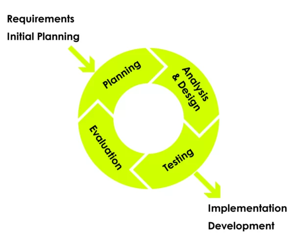

Domeenipõhine disain

Domeenipõhine disain (DDD) on tarkvara kujundamise lähenemisviis, mis rõhutab modelleerimistarkvara, et see sobiks konkreetse domeeniga domeeniekspertide sisendi põhjal. DDD puhul peaks tarkvarakoodi struktuur ja keel olema täpselt kooskõlas selle ärivaldkonnaga, mida see teenindab. Näiteks kui tarkvara käsitleb laenutaotlusi, peaksid sellel olema sellised klassid nagu "laenutaotlus" ja "kliendid" selliste meetoditega nagu "aksepteeri pakkumine" ja "taganemine".
DDD eesmärkide hulka kuuluvad:
1. Põhitähelepanu asetamine projekti põhidomeenile ja domeeniloogikale.
2. Keerukate kujunduste rajamine domeeni mudelile, mida täiustatakse tehniliste ja valdkonnaekspertide koostöö kaudu.
3. Loomingulise koostöö algatamine kontseptuaalse mudeli iteratiivseks viimistlemiseks, mis käsitleb konkreetseid domeeniprobleeme.
DDD kriitikud väidavad, et arendajatel võib olla vaja rakendada märkimisväärset isoleerimist ja kapseldamist, et säilitada mudel kasuliku konstruktsioonina. Kuigi DDD pakub selliseid eeliseid nagu hooldatavus, on see soovitatav eelkõige keeruliste domeenide jaoks, kus mudel pakub selgeid eeliseid domeeni mõistmisel.
DDD põhikontseptsioonid ja tavad hõlmavad järgmist:
1. Domeenimudel: domeeni valitud aspekte kirjeldav abstraktsioonide süsteem, mida kasutatakse domeeniga seotud probleemide lahendamiseks.
2. Üldlevinud keel: levinud keel, mida jagavad domeenieksperdid, kasutajad ja arendajad ning mida kasutatakse domeenimudelis ja süsteeminõuetes.
3. Strateegiline disain ja taktikaline disain: DDD tugisambad koos üldlevinud keelega, mis keskenduvad vastavalt kõrgetasemelisele domeenikujundusele ja üksikasjalikele disainiotsustele.
4. Domeenikiht: üks levinumaid kihte objektorienteeritud mitmekihilises arhitektuuris, mis sisaldab domeenispetsiifilist loogikat.
5. Mudelid: olemid (määratletud identiteediga), väärtusobjektid (muutumatud objektid atribuutidega, kuid ilma identiteedita), sündmused (esindavad mineviku esinemisi) ja agregaadid (seotud objektide kogud juurolemiga).
Praktikas julgustab DDD objekti loomist objektist endast eraldama. Hoidlad toovad domeeniobjekte andmesalvest, tehased loovad domeeniobjekte otse ja teenused käsitlevad funktsioone, mis ei kuulu ühegi konkreetse objekti juurde.
Üldiselt on DDD eesmärk luua tarkvara, mis ühtib tihedalt selle domeeniga, mida see teenindab, soodustades koostööd tehniliste ja domeeniekspertide vahel, et saavutada keerukamates valdkondades parem arusaamine ja probleemide lahendamine.
Eelised, kasutades Domeenipõhist Disaini:
- Domeenipõhine Disain kasutab mustreid ja põhimõtteid keeruliste probleemide lahendamiseks tarkvaras ning aitab parandada suhtlemist. Kui on loodud ühine ja üldlevinud keel, mis on seotud projekti domeenimudeliga, leiavad meeskonnad suhtlemise projekti arendustsükli jooksul lihtsamaks. Lisaks vajab Domeenipõhine Disain vähem jargooni, kui arutatakse rakenduse aspekte, kuna üldlevinud keel määratleb tehnilisemate aspektide jaoks lihtsamad mõisted.
- See aitab kirjutada testimiseks sobivat ja selget koodi, mis esindab domeeni. Rõhk on domeenil üle liidese, kuna Domeenipõhine Disain toodab rakendusi, mis sobivad täpselt ja esindavad käsitletavat domeeni. Fookus on domeenil, mis tähendab, et Domeenipõhine Disaini lähenemine toodab toote, mis toimib hästi sellega seotud publikule.
- See parandab paindlikkust ja paremat arusaamist, kuna Domeenipõhine Disain põhineb objektipõhise analüüsi ja disaini kontseptsioonil ning kõik domeenimudeli sees olevad asjad saavad põhineda objektil ja võivad olla üsna kapseldatud ja moodulaarsed.
Puudused, kasutades Domeenipõhist Disaini:
- Domeenipõhise Disaini kasutamine on sobilik ainult juhul, kui domeen on keeruline, kus äriloogika on keeruline ja keerukas. Siiski ei ole see sobilik rakendustele, mille domeeni keerukus on marginaalne, kuid tehniline keerukus on olemas.
- Domeenipõhise Disaini kasutamine võtab palju aega ja nõuab tugevat domeeniekspertiisi. Mõnikord on vajalik välise meeskonna liikmete integreerimine, kes saavad toimida domeeniekspertidena kogu arendustsükli vältel.
- Domeenipõhise Disaini praktikad tuginevad pidevale iteratsioonile ja integreerimisele pidevalt paindliku projekti ehitamiseks, mis saab ennast vajaduse korral kohandada.